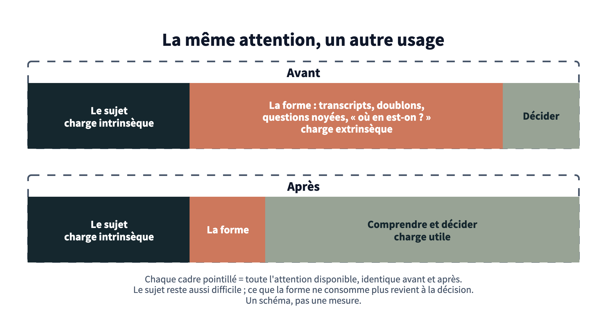
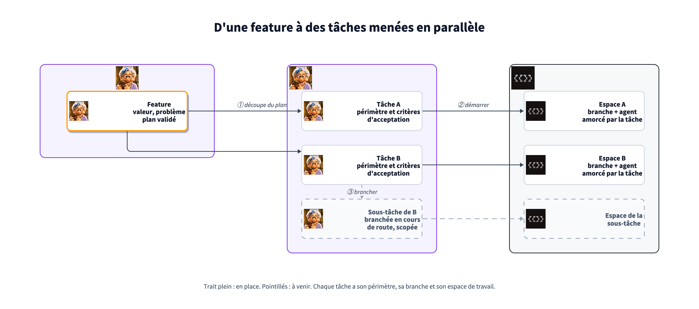
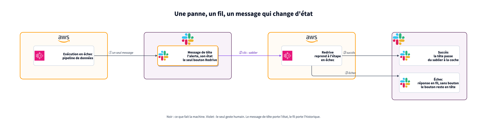
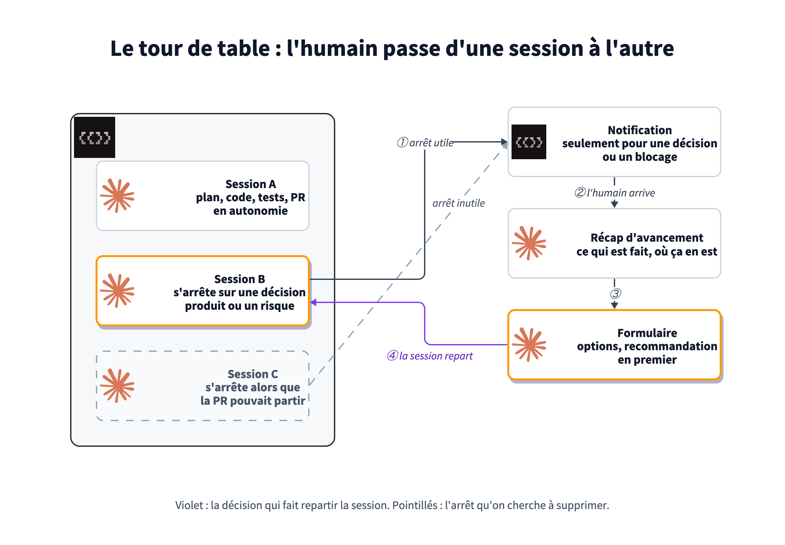

Économiser l'attention
Avec des agents, le code ne manque plus. Ce qui manque, c'est l'attention de ceux qui relisent et décident, et un message mal écrit, une alerte inutile ou une décision posée en vrac en consomment une part. Ce qui sort de la machine doit donc se lire au moindre coût, et ce qui reste à faire doit être écrit ailleurs que dans une tête.
Attention is all you need
En 2017, une équipe de chercheurs de Google publie « Attention Is All You Need ». L'article introduit le Transformer, l'architecture sur laquelle reposent les grands modèles de langage. Tout part de là : pour la machine, l'essentiel est de savoir où porter son attention.
L'humain n'y échappe pas. Travailler avec des agents demande une attention bien placée :
- Sur ce qui compte. Les sujets cruciaux, pas le bruit qui les entoure.
- Avec le bon niveau de visibilité. Une vue d'ensemble de ce qui tourne, et la compréhension de ce qui a été fait.
- Dans un travail ergonomique. Des outils et des formats qui concentrent au lieu de disperser.
Sans elle, l'agent devient une extension de soi qu'on ne maîtrise plus et qui ne suit plus nos intentions : c'est de là que viennent le désarroi et le syndrome de l'imposteur. Avec elle, l'IA prolonge l'humain. Ce module traite de cette attention et de la façon de la préserver.
Avant les outils : nos réactions
L'IA nous submerge de nouveautés, souvent plus vite qu'on ne peut les absorber. Ce flot provoque des réactions fortes, qui pèsent sur l'attention avant même qu'on ouvre un outil :
- Le déni. « Ça ne marche pas vraiment. » On écarte l'outil, et l'écart avec ceux qui s'en servent se creuse sans bruit.
- Le syndrome de l'imposteur. L'agent écrit le code, et on se sent dépossédé de son propre travail.
- La confusion. Trop d'outils, de termes et de façons de faire : on ne sait plus par quel bout prendre l'IA.
La réponse consiste à replacer l'humain dans la boucle, à une place qu'il choisit : l'agent explore, rédige et vérifie, l'humain cadre, tranche et relit. C'est la place la plus stimulante, et celle où il crée le plus de valeur. Vue ainsi, l'IA redevient un outil au service de l'humain, une extension de lui-même.
- Un partenaire de réflexion. L'IA challenge une idée, la met à l'épreuve, cherche ce qu'on n'aurait pas cherché. Bien utilisée, elle aide à réfléchir au lieu de réfléchir à notre place.
- La bouder coûte cher. Des professionnels qui l'avaient écartée découvrent tard ce qu'elle leur aurait apporté. On le voit aujourd'hui chez des mathématiciens.
- Préserver l'attention, c'est préserver sa santé. Bien travailler avec l'outil, c'est aussi garder sa charge cognitive et sa santé mentale à un niveau tenable. La suite du module dit comment.
Chez nous, l'agent prépare et l'humain décide : les décisions arrivent en formulaire, chaque PR est relue par un humain avant le merge, et l'équipe partage dans un canal d'atelier ce qu'elle essaie.
La santé mentale, de front
Le sujet dépasse l'ergonomie. On voit en ce moment des burn-out dans les équipes tech, et l'IA peut les aggraver autant que les prévenir. Il y a 3 risques, à traiter ensemble :
- La surcharge. Des sessions en parallèle, des notifications qui tombent, un rythme dicté par les machines : on va plus vite, plus longtemps, sans jamais avoir fini. C'est ainsi qu'on arrive au burn-out.
- La perte d'attention. Passer d'un contexte à l'autre toute la journée fragmente l'attention, et plus rien n'est approfondi.
- L'atrophie. « Brain rot », mot de l'année 2024 du dictionnaire d'Oxford, visait le défilement sans fin. Déléguer toute la réflexion à un assistant produit un effet voisin : une étude du MIT Media Lab publiée en 2025 parle de « dette cognitive » chez des participants qui rédigent avec un assistant. Une compétence qu'on ne pratique plus finit par se perdre.
Aucun réglage isolé n'y suffit : la réponse passe autant par l'outillage que par l'organisation et la culture.
- Limiter ce qui tourne. Un plafond de tâches en parallèle et des notifications rares (le tour de table, plus bas).
- Garder la réflexion. L'agent exécute et met à l'épreuve ; cadrer, trancher et relire restent humains, et entretiennent le muscle.
- Des temps sans agent. Du travail de fond, et une vraie déconnexion : le rythme des machines n'est pas celui des humains.
- En parler. La fatigue face à l'IA est un sujet d'équipe, pas un aveu de faiblesse.
Le goulot s'est déplacé
Un agent rédige une PR, un diagnostic ou un plan en quelques minutes. Un humain met plus longtemps à le lire qu'il n'en a fallu pour le produire. La capacité d'attention est fixe ; ce qu'on peut changer, c'est ce qui la consomme. La psychologie cognitive distingue 3 types de charge :
- La charge intrinsèque : la difficulté du sujet lui-même. Une migration de schéma partagé reste difficile, on ne la supprime pas.
- La charge extrinsèque : ce que la forme ajoute. Un transcript au lieu d'un verdict, une alerte en double, une question noyée en fin de message, un « où en est mon sujet ? ».
- La charge utile : l'effort qui construit la compréhension et la décision. C'est la seule qu'on accepte de payer.

La suite passe en revue les endroits où la charge extrinsèque s'accumule le plus vite quand on travaille avec des agents.
Tracer tout ce qui reste à faire
Une action qui n'est écrite nulle part occupe une place dans la tête de quelqu'un, jusqu'à ce qu'elle soit faite ou oubliée. Avec plusieurs agents qui avancent en même temps, ces restes se multiplient : un script à lancer après le merge, un cas limite repoussé, une question laissée en suspens dans une PR. D'où la règle : chaque action restante est un objet tracé dans un outil de gestion des tâches branché sur le développement, pas une note mentale.
- D'une feature à un ensemble de tâches cohérentes. La feature porte la valeur, le problème et un plan. Le plan validé se découpe en tâches, chacune au même gabarit, avec son périmètre et ses critères d'acceptation. La découpe se fait une fois, à partir du plan, plutôt qu'au fil de l'eau.
- Une tâche, une branche, un espace de travail. Démarrer une tâche crée sa branche et ouvre un espace isolé dont l'agent est amorcé par la description de la tâche. Le périmètre de la tâche est le périmètre de la session : l'agent n'a pas à deviner où s'arrêter.
- Brancher en arbre plutôt que gonfler la tâche. Quand une tâche révèle un second sujet, on ne l'élargit pas : on branche une sous-tâche, scopée sur ce seul sujet, qui part dans son propre espace. La tâche d'origine garde un périmètre lisible, et les deux avancent en parallèle.
- Une vue d'ensemble de la parallélisation. Avec 5 agents en cours sur 5 branches, on a 5 contextes que personne ne peut tenir de tête. Il faut un endroit qui montre d'un coup d'œil qui travaille sur quoi, où en est chaque espace, et lequel attend un humain.
- Les restes post-merge aussi. Une migration ponctuelle ou un script à lancer est posté dans le fil de la tâche, là où on le retrouvera.

| Étape | Statut |
|---|---|
| Découper le plan d'une feature en tâches cohérentes | en place |
| Démarrer une tâche : branche liée et espace de travail amorcé | en place |
| Voir toutes les sessions parallèles au même endroit | en place |
| Poster les tâches post-merge dans le fil de la tâche | en cours |
| Brancher une sous-tâche scopée depuis une tâche, en arbre | à venir |
Les features, plans et tâches vivent dans Odette, notre outil de pilotage interne. Le skill odette-split-plan découpe le dernier plan d'une feature en tâches ; odette-start-task crée la tâche sous sa feature, crée et lie sa branche GitHub, puis ouvre un workspace Superset sur cette branche avec un agent amorcé par la description de la tâche. Superset affiche tous les workspaces en cours, ce qui donne la vue d'ensemble de ce qui tourne en parallèle. Aujourd'hui, une tâche se rattache à une feature, pas à une autre tâche : l'arbre de sous-tâches est la prochaine étape.
Du contenu qui se lit en une fois
- Le verdict d'abord. La première ligne dit ce qui est vrai maintenant : fait, cassé, validé, ou en attente de quelqu'un. Le détail suit, pour qui en a besoin.
- Une réponse courte, pas un récit. L'agent rend ce qu'il a trouvé, pas le chemin qu'il a parcouru. Le transcript reste disponible ; il n'est pas le livrable.
- Des chiffres tracés. Un chiffre sans source oblige le lecteur à se demander d'où il vient. Avec sa source, il se lit et se vérifie.
- Calé sur le lecteur. Un dev veut le composant et la commande ; un ops veut le geste et le dossier concerné. Le même incident s'écrit deux fois si les deux le lisent.
- Une page plutôt qu'un pavé. Quand la réponse dépasse quelques paragraphes ou sera relue par d'autres, elle devient un document publié, avec des titres et des schémas, plutôt qu'une sortie de terminal qui défile.
Les instructions communes demandent des réponses courtes, sans préambule. Un skill vulgarisation réécrit un incident pour un lecteur non technique : verdict, cause racine traduite en gestes et en données, chiffres tracés, demande précise à la fin. Les analyses plus longues, comme ce dossier, sont publiées en pages plutôt que collées dans Slack.
Dire l'intention sans friction
Cette section et la suivante sont nées d'une dictée en français, pleine de « euh » et de phrases reprises en cours de route. L'agent en a retiré les tics, gardé l'intention, puis écrit le texte. 2 réglages de Claude Code suffisent : "language": "French" pour les réponses, le code et les commits restant en anglais, et la dictée en mode hold, où l'on parle en gardant la barre d'espace enfoncée.
La charge vaut aussi dans l'autre sens : formuler une idée coûte, et chaque frottement entre l'idée et l'agent en fait perdre une partie. Autant rendre l'expression aussi naturelle que possible.
- Sa langue maternelle. On y exprime une idée plus finement que dans une langue apprise. L'agent retraduit, et applique la bonne nomenclature dans le code, la documentation et les commits.
- La voix plutôt que le clavier. Parler retire la friction de l'écriture : l'idée sort comme elle vient, sans s'arrêter pour la mettre en forme.
- L'agent nettoie. Hésitations, reprises, tics de l'oral : il les retire et garde l'intention. Pas besoin de se relire avant d'envoyer.
Un graphique quand il remplace un paragraphe
Un schéma vaut le coup quand il montre un mécanisme que la prose oblige à reconstruire de tête : un flux, une frontière de confiance, une séquence d'états. Sinon, il ajoute de la charge au lieu d'en retirer.
- Un message par figure, écrit dans son titre. Tout ce qui ne sert pas ce message sort de la figure.
- Une lecture dans un seul sens, de gauche à droite, avec des étapes numérotées que le texte peut commenter une par une.
- Une convention visuelle fixe sur tout le dossier : trait plein pour ce qui est en place, pointillés pour ce qui vient. Le lecteur l'apprend une fois.
- Des données mesurées seulement. Un graphique de chiffres inventés est pire qu'aucun graphique : il a l'air d'une preuve. Un schéma conceptuel se présente comme tel, comme celui du début de cette page.
- Le schéma est du code. Écrit en texte et rendu par un outil, il se relit en PR et se met à jour avec le système qu'il décrit.
Les schémas de ce dossier sont écrits en D2, mis en page par le moteur TALA sur une grille d'une rangée, avec les vrais logos des outils. Un skill du dépôt porte la méthode, et ses premiers essais ratés (flux à l'envers, flèches qui traversent le titre avec d'autres moteurs) l'ont façonnée.
Des notifications qui méritent d'être lues
Une notification interrompt. Elle n'a le droit d'exister que si quelqu'un doit agir ou savoir, et elle doit coûter le moins possible à traiter. La base est connue : les bots postent, les humains répondent en fil. Reste la forme de la notification elle-même :
- Actionnable, ou supprimée. Une notification que personne ne transforme jamais en geste apprend à tout le monde à ignorer le canal, y compris les alertes importantes.
- Un message qui change d'état, pas 10 messages. L'alerte affiche son état en tête : en échec, en reprise, rétablie. On n'empile pas « relancé », « toujours en échec », « c'est bon » en messages séparés.
- La suite d'une panne va dans son fil. Une reprise qui échoue à nouveau répond sous l'alerte d'origine, au lieu d'en ouvrir une nouvelle qu'il faudrait relier de tête.
- Un seul bouton par fil. Si chaque message porte son action, personne ne sait lequel cliquer. L'action vit sur le message de tête.
- Un retour immédiat au geste. L'état change au clic, avant même que l'action ne démarre : on ne clique pas deux fois parce que rien n'a bougé.
- Au bon endroit. Une notification sur un dossier client vit dans l'outil où on traite ce dossier, pas dans un canal de discussion.

Les alertes de la data platform suivent ce cycle : un sablier posé sur l'alerte dès le clic sur Redrive, remplacé par une coche quand l'exécution reprise réussit, pas quand elle démarre ; en prod, ce succès ferme aussi les issues Sentry que l'exécution avait levées ; un redrive qui échoue répond dans le fil de l'alerte d'origine, sans bouton, et le bouton reste sur le message de tête. Les anomalies de ventes, qui concernent un client, ont quitté Slack pour être levées dans l'application.
Décider : l'agent interviewe, un formulaire tranche
La pire forme d'une décision, c'est une liste de points « en attente de ta décision » à la fin d'une longue réponse : elle ne se distingue pas du reste, elle oblige à rédiger une réponse, et elle se perd. Il vaut mieux faire l'inverse : l'agent prépare la décision, l'humain la prend d'un clic, dans un formulaire.
- Les enjeux. Ce que la décision engage : coût, risque, réversibilité, qui la subit. Une décision réversible et peu coûteuse ne mérite pas d'entretien.
- Les options. Une par alternative réelle, de 2 à 4. « Ne rien faire » en fait souvent partie.
- Avantages et inconvénients, écrits comme des conséquences concrètes : ce qui se passe si on choisit cette option, pas une qualité abstraite.
- Une recommandation, placée en premier et marquée. Répondre doit pouvoir se réduire à valider.
- La trace. La décision et son pourquoi sont écrits là où le sujet vit : la tâche, le fil, la PR (module 2).
Un redrive qui échoue à nouveau : où poster l'alerte ?
Quand la décision demande d'abord de cerner le sujet, l'agent mène un entretien plutôt qu'un questionnaire :
- Une question à la fois, du plus large au plus précis, et pas de prose entre deux questions.
- Jamais une question dont la réponse est déjà écrite : dans la demande, le fil, la tâche ou la documentation.
- Si les deux réponses mènent au même résultat, la question ne se pose pas.
- « Je ne sais pas » ferme la question : elle devient une hypothèse notée, on passe à la suivante.
- Un plafond sur le nombre de questions, et on s'arrête dès que la décision est prenable.
Une règle des instructions globales : toute décision qui revient à l'humain passe par AskUserQuestion, le formulaire de Claude Code, avec une option par alternative réelle, sa conséquence dans la description, la recommandation en premier, et jusqu'à 4 questions dans le même appel. Dès qu'une réponse contiendrait « dis-moi » ou « tu préfères », c'est un formulaire. Pour spécifier une feature, le skill prd-interview applique l'entretien : une question par tour, une réponse par défaut, 12 questions au plus, puis le document est rédigé et poussé sur Odette.
Le tour de table
Les agents tiennent désormais des tâches longues seuls. On en mène parfois plus d'une dizaine en même temps, chacune avec sa PR. L'humain ne pilote plus chaque session : il fait le tour de table, et ce sont les sessions qui l'interviewent, l'une après l'autre, quand elles ont besoin de lui.
- Notifié rarement, et pour une raison. Une session ne s'arrête que pour une décision qui revient à l'humain (un choix produit, un risque, un geste irréversible) ou pour un vrai blocage. Le reste, elle le fait.
- Chasser les arrêts inutiles. Une session qui s'arrête alors que l'implémentation est finie et que la PR pouvait partir coûte un aller-retour pour rien. Chacun de ces arrêts est une friction à corriger : une consigne, un critère d'arrêt (module 2), un droit manquant. C'est l'huile dans les rouages.
- Des sessions aussi longues que possible. Plus une session va loin seule, moins le tour de table compte de passages.
- Un goulot volontaire. Les tâches en engendrent d'autres : une fonctionnalité réclame une fonctionnalité annexe, un correctif en révèle un deuxième. L'arbre grossit, et le buffer de tâches en cours peut donner l'impression de croître sans fin. Au-delà d'un certain nombre de sessions en parallèle, la charge déborde et la qualité du raisonnement baisse sur chacune. On plafonne donc ce qui tourne, et le reste attend dans le backlog : une tâche moins urgente est créée et tracée, mais elle ne démarre pas.
- Changer de contexte sans rien reconstruire. À chaque arrêt, la session présente d'abord un récap (ce qui est fait, où elle en est), puis les décisions à prendre, en formulaire. On passe à la session suivante avec une vue nette de chacune.

Chaque tâche tourne dans son workspace Superset, et la liste des workspaces sert de table. Les instructions laissent à l'agent les commits, les tests et les relances, et ne remontent à l'humain que les choix qui lui reviennent, par AskUserQuestion. Le hook Stop qui juge la ligne Goal: renvoie au travail une session qui s'arrête avant l'objectif. Une tâche annexe qui peut attendre est créée dans Odette sans être démarrée : elle reste au backlog, sans workspace ni session.
À reprendre
- Replacez l'humain dans la boucle, à la place où il tranche : l'IA est une extension de lui, pas un remplaçant.
- Traitez la santé mentale de front : limiter ce qui tourne, garder la réflexion, des temps sans agent, et en parler.
- Ne réduisez pas la difficulté du sujet, retirez ce que la forme ajoute.
- Toute action restante est une tâche tracée ; une feature se découpe en tâches scopées, une tâche se branche plutôt qu'elle ne gonfle.
- Une tâche, une branche, un espace, et une vue d'ensemble de ce qui tourne en parallèle.
- Le verdict en première ligne, le détail ensuite, la page quand c'est long.
- Parlez à l'agent dans votre langue et à la voix, il garde l'intention et retire le reste.
- Un graphique seulement s'il remplace un paragraphe, et jamais sur des chiffres inventés.
- Une notification actionnable, qui change d'état au lieu de se multiplier.
- Les décisions par formulaire, la recommandation en premier, la trace écrite.
- Faites le tour de table : des sessions longues, des arrêts rares, un récap et un formulaire à chaque passage.
- Plafonnez les tâches en parallèle ; ce qui peut attendre va au backlog.